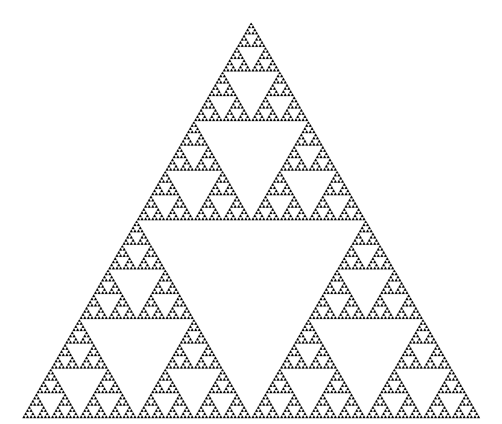

Trójkąt Sierpińskiego to jeden z najprostszych fraktali. Jego konstrukcja została podana przez polskiego matematyka Wacława Sierpińskiego w 1915. Tworzymy go rysując trójkąt równoboczny, łączymy środki boków trójkąta, dzieląc go na 4 trójkąty. Następnie usuwamy trójkąt środkowy i powtarzamy operację na pozostałych 3 trójkątach.

Zbiór Mandelbrota to jeden z najbardziej rozpoznawalnych obiektów współczesnej matematyki. Nazwa tego obiektu została wprowadzona dla uhonorowania jego odkrywcy, matematyka Benoit Mandelbrota. Mandelbrot spopularyzował geometrię fraktalną, cp uświadomiło społeczeństwu, że fraktale mogą przybierać kształty podobne do tych naturalnych.
Zbiorem Mandelbrota nazywamy zbiór, który oparty jest o iterację liczb zespolonych według równania:
zn+1 = zn2 + p
gdzie p to liczba zespolona ze zbioru, a wartość z0 = 0. Liczby, dla których tak zdefiniowany ciąg nie dąży do nieskończoności należą do zbioru Mandelbrota.


Zbiór Julii i zbiór Fatou to dwa komplementarne (będące swoimi dopełnieniami) zbiory zdefiniowane przez odwzorowanie będące funkcją wymierną. Nieformalnie, zbiór Fatou funkcji zawiera wartości o takiej właściwości, że w ich bliskim otoczeniu pozostałe wartości zachowują się podobnie po iterowanym przekształcaniu zadaną funkcją, natomiast w zbiorze Julii są te wartości, dla których dowolnie małe zaburzenie może powodować drastyczne zmiany w ciągu iterowanych wartości. Stąd zachowanie funkcji w zbiorze Fatou jest „regularne”, natomiast w zbiorze Julii „chaotyczne”.
Zbiór Julii - tak jak zbiór Mandelbrota, jest podzbiorem płaszczyzny zespolonej. Nazwa zbioru pochodzi od nazwiska francuskiego matematyka Gastona Julii. Zbiór tworzą te punkty p dla których ciąg opisany rówaniem rekurencyjnym:
zn+1 = zn2 + c
nie dąży do nieskończoności, gdzie p to liczba zespolona będąca parametrem zbioru, z0 = p. Jak widać rówanie jest bardzo podobne do równania którego używaliśmy do obliczania zbioru Mandelbrota. Jednak tym razem c jest stałe, a zmieniamy tylko parametr początkowy równania. Wcześniej zaczynaliśmy z z0 = 0, a teraz jest ono równe p, czyli punktowi któremu chcemy sprawdzić, czy należy do zbioru.
Struktury o budowie fraktalnej są również powszechnie spotykane w przyrodzie. Przykładem mogą być krystaliczne dendryty (np. płatki śniegu), systemy wodne rzek, błyskawice lub kwiaty aloesu.